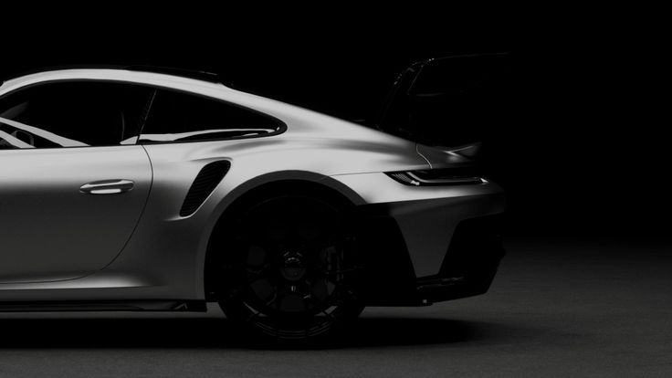
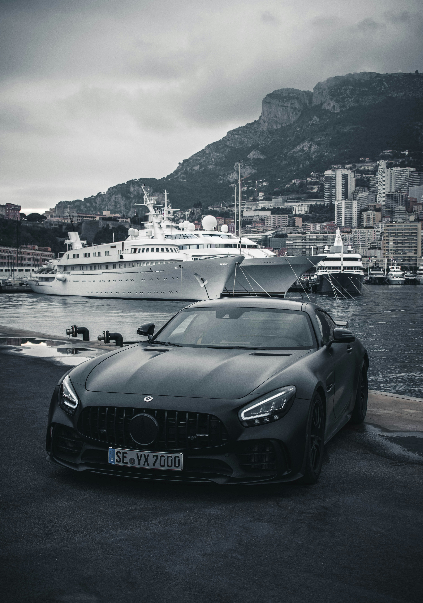
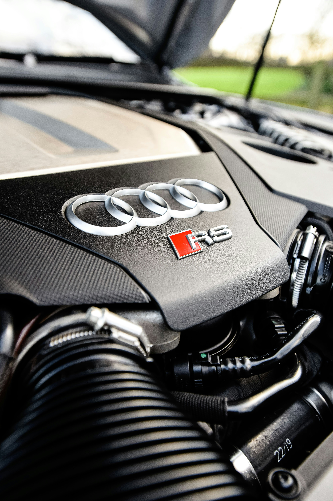

CURATED EXCELLENCE
The Pillars of German Engineering.
PORSCHE
STUTTGART, GERMANY
Porsche represents the absolute synthesis of daily usability and track-bred performance. From the timeless silhouette of the 911 to the cutting-edge engineering of the Taycan, Porsche remains the benchmark for driver engagement. Every component is designed with a singular purpose: to elevate the mechanical connection.
View Porsche Inventory
BMW
MUNICH, GERMANY
Bayerische Motoren Werke has built its legacy on the "Ultimate Driving Machine" philosophy. Known for their precision-engineered inline-six engines and perfectly balanced chassis, BMWs are designed for those who appreciate the technical nuances of performance. From the M-series icons to modern masterpieces.
View BMW Inventory
MERCEDES-AMG
STUTTGART, GERMANY
The three-pointed star represents the pinnacle of automotive luxury and technological innovation. Mercedes-Benz consistently redefines the standards of comfort and performance, blending peerless craftsmanship with avant-garde engineering. At EuroSpec, we focus on the high-performance AMG variants and classic grand tourers.
View Mercedes Inventory
AUDI
INGOLSTADT, GERMANY
Vorsprung durch Technik. Audi's commitment to progress is best exemplified by their legendary Quattro all-wheel-drive system and their mastery of minimalist, high-tech interiors. Audi combines understated elegance with explosive performance, creating vehicles that excel in every environment, from the autobahn to the alpine pass.
View Audi Inventory